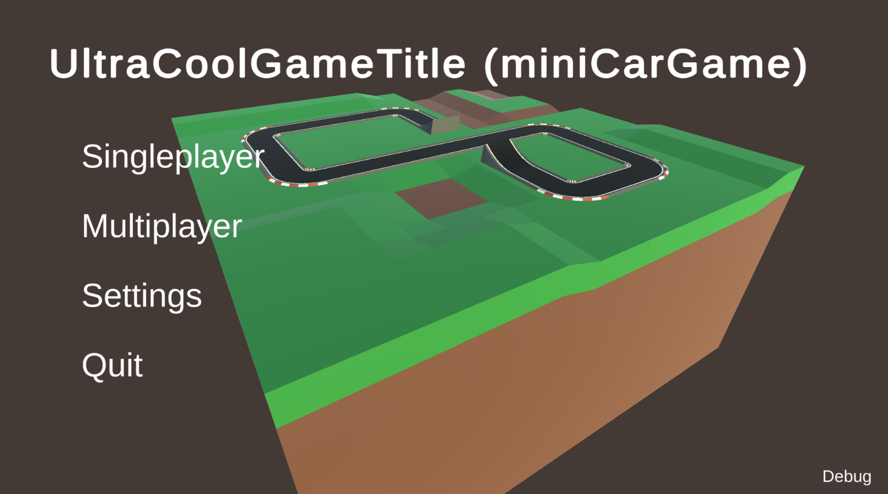
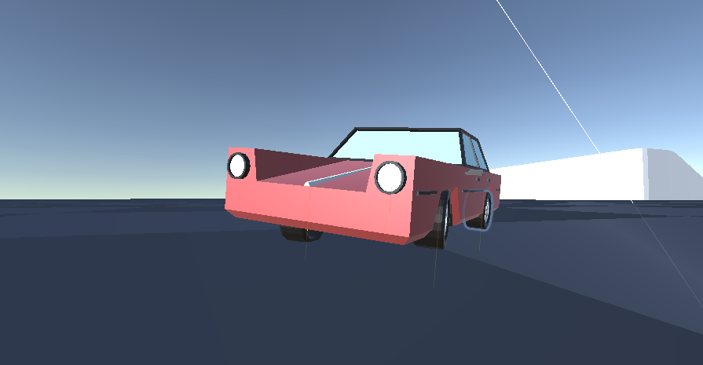
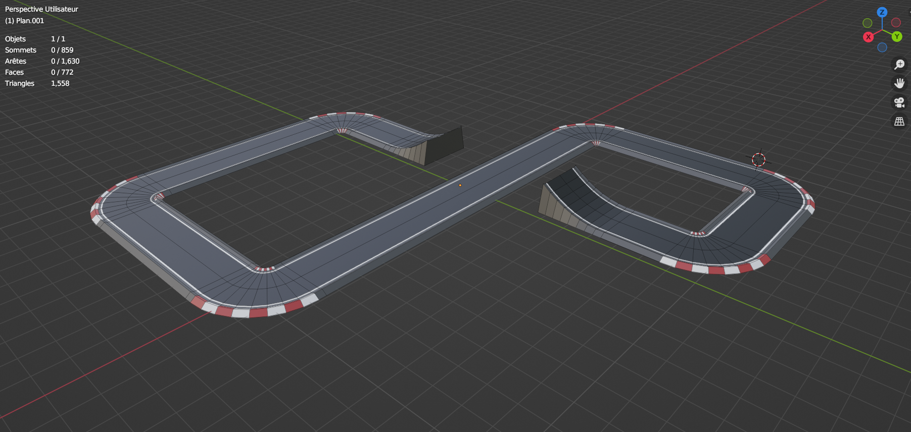
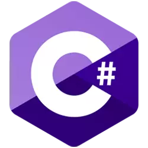

:( Sorry, this page doesn't exist in english yet. Click here to see the summary in french.

MiniCarGame (nom temporaire) est mon projet le
plus récent, il n'est pas du tout fini et est a peine jouable, mais est déjà malgré ceci,
probablement mon projet préféré. C'est un jeu de voiture, très axé arcade et un peu style miniaturisé. Le
projet est fait en C# avev Unity 3D.
Ce que j'ai le plus préféré en codant et designant le jeu était de réaliser les mouvements de la
voiture. A la base, le projet était une réitération d'un projet plus
ancien, dans lequel j'avais réalisé une voiture avec des suspensions semi-réalistiques. Alors dés le
début du projet, j'ai pu refactor tout le code des suspensions de voiture pour les rendre plus agréables
visuellement, et rendre les roues totalement indépendantes les unes des autres (avant il n'y avait une
verification de
"IsGrounded" que pour la voiture et pas par roue).

Ensuite, j'ai pu m'attarder sur le modèle de la voiture, qui était un rectangle au début. J'ai
réalisé via Blender un modèle low-poly qui me plait vraiment, inspiré des voitures des années 60. Il
fallait aussi faire une piste de course, que j'ai réalisé en suivant un tutoriel sur Youtube. Les deux
modèles m'ont pris beaucoup de temps au début, mais je me suis rendu compte que plus j'avançais, plus je me
sentais a l'aise et rapide en modélisation.

Suite a du feedback sur mon jeu, j'ai décidé d'ajouter du air control, la voiture en l'air était
incontrolable et définie plutot aléatoirement par les conditions de saut. Cela a été relativement facile, et
après quelques ajustements il etait possible de tourner sur soir-même vers la gauche/droite et le haut/bas.
Aujourd'hui le projet n'est pas en pause, mais son avancement est très réduit du aux cours. Une fois que je serais organisé pour mon année scolaire et mon
stage, je compte accelérer le développement du jeu et produire quelque chose de fini.


RÉSUMÉ DU PROJET :
OUTILS UTILISÉS
- Création de modèles 3D pour
un
projet et respect d'une direction artistique
-  Code en C#
 utilisation de Unity,
approfondissement des connaissances du moteur de jeu.
utilisation de Unity,
approfondissement des connaissances du moteur de jeu. Gérance d'un repository git via la
plateforme Github (vite fait)
Gérance d'un repository git via la
plateforme Github (vite fait)
COMPÉTENCES ACQUISES / AMÉLIORÉES
- Modélisation 3D
- Game design
- Conception
- Niveau de programmation